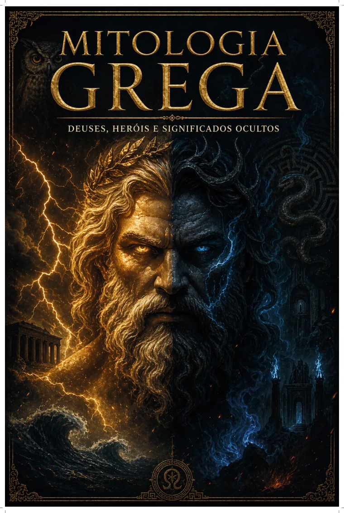

De onde tudo veio?
Caos, Gaia, Urano, os Titãs e as disputas que antecedem a era do Olimpo.
Por trás de cada deus, herói e criatura existe uma história sobre poder, destino, coragem e escolhas humanas. Descubra esse universo em Mitologia Grega — Deuses, Heróis e Significados Ocultos.

Caos, Gaia, Urano, os Titãs e as disputas que antecedem a era do Olimpo.
Zeus, Atena, Hades, Poseidon e outras divindades, seus domínios e símbolos.
As jornadas de Héracles, Aquiles e Odisseu, entre feitos e consequências.
Narrativas como Pandora e Sísifo, vistas também pelas suas camadas simbólicas.
Arraste o carrossel para conhecer páginas reais do próprio e-book, apresentadas em resolução reduzida.
As imagens acima são amostras do material enviado. O arquivo completo não está disponibilizado nesta página.
O material percorre personagens e histórias conhecidas, relacionando as narrativas a temas humanos recorrentes.
Conheça os primeiros seres, os Titãs e a formação do universo mítico.
Observe seus domínios, rivalidades, símbolos e relações.
Descubra jornadas marcadas por força, limites, desafios e destino.
Reflita sobre interpretações simbólicas e padrões humanos presentes nas lendas.
Caos, Gaia, Urano, Cronos e a Titanomaquia.
As principais divindades, seus atributos e relações.
Héracles, Aquiles, Odisseu e suas jornadas.
Medusa, Minotauro, Hidra, Cérbero e outros seres míticos.
Guerra de Troia, Pandora, Sísifo e outros mitos.
Interpretações sobre poder, coragem, destino e escolhas.
Reúna numa mesma leitura narrativas, personagens e símbolos que marcaram a tradição grega. Uma obra de divulgação cultural, com apresentação visual e interpretativa.
O material já pode ser conhecido nesta página. O preço e o checkout serão informados quando a oferta comercial estiver disponível.
Ver páginas do e-book →Checkout ainda não disponívelÉ um e-book em PDF, preparado para leitura em dispositivos compatíveis com esse formato.
O arquivo possui 52 páginas no total, incluindo capa e páginas editoriais.
A origem do mundo mítico, Titãs, deuses, heróis, criaturas, grandes narrativas e interpretações simbólicas.
Não é apresentado como uma pesquisa acadêmica com bibliografia técnica. É uma publicação visual de divulgação cultural e interpretação de mitos.
O link de pagamento ainda não foi disponibilizado. Quando a oferta for ativada, preço e checkout serão informados nesta página.
Conheça a apresentação visual do e-book e veja os personagens e temas reunidos no material.
Voltar às amostras →